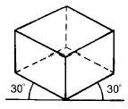
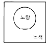
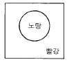
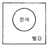
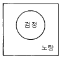
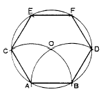
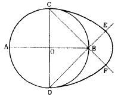
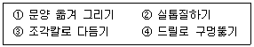

목공예기능사 (2004-10-10 기출문제)
1과목: 공예디자인
1. 순색 빨강에 검정색을 혼합하였을 때 가장 가까운 색은?
- 저채도의 어두운 빨강색
- 저채도의 밝은 빨강색
- 저채도의 탁한 빨강색
- 중간 채도의 빨강색
(정답률: 83%)

2. 다음 그림의 투상도는?

- 정투상도
- 사투상도
- 등각투상도
- 부등각투상도
(정답률: 96%)
3. 자연을 편화하는데 가장 중요시 해야 될 점은?
- 세련미가 있게
- 사실적인 표현을 위주로
- 자연의 특징을 잘 살려서
- 세밀하게 표현
(정답률: 90%)
4. 도안의 기초를 마련하기 위해 확대 관찰이 필요한 것은?
- 유리창의 성애
- 얼룩말의 무늬
- 고목
- 나뭇결
(정답률: 81%)
5. 신문지나 색종이, 헝겊 등 각각 다른 재질감을 이용하는 디자인 제작 기법은?
- 마아블링
- 콜라쥬
- 포토 몽타즈
- 배수법
(정답률: 96%)
6. 고대의 유물 중 목재로 만들어진 공예품이 발굴되지 않는 가장 큰 이유는?
- 고대인은 목제품을 만들지 않았기 때문이다.
- 목제품을 많이 만들어 사용하였으나 쉽게 부패했기 때문이다.
- 목제품은 극히 소량만 만들어 사용했기 때문이다.
- 목제품을 만들수 있는 도구가 없었기 때문이다.
(정답률: 97%)
7. 다음 배색 중 명시도가 가장 높은 것은?




(정답률: 87%)
8. 일반적으로 배색을 할 때 고려할 사항 중 잘못된 것은?
- 색상의 가지수를 될 수 있는대로 많이 한다.
- 주제와 배경과의 대비를 생각한다.
- 색의 경중감을 이용한다.
- 볼수 있는 거리를 이용한다.
(정답률: 86%)
9. 일반적인 표제란의 형식에서 기입하지 않아도 되는 것은?
- 척도
- 재료
- 작성일
- 도명
(정답률: 95%)
10. 지름을 표시한 기호는?
- ø
- □
- R
- t
(정답률: 92%)
11. 다음 도면은 AB를 한 변으로 한 정6각형을 구하는 방법이다. 작도 순서상 제일 먼저 구해야 할 점은?

- C
- O
- D
- E
(정답률: 94%)
12. 다음 표준난형(標準卵形)작도 중 원호 CE의 중심은?

- A
- B
- C
- D
(정답률: 92%)
13. 500 × 100의 넓이를 가진 널판을 제작하기 위해 10/1의 비례로 도면을 그렸다. 기입되어야 할 치수는?
- 5 × 1
- 50 × 10
- 500 × 100
- 5000 × 1000
(정답률: 80%)
14. 현대공예의 정의를 가장 잘 설명한 것은?
- 기능의 결함없이 미적질서를 갖는 실용예술
- 장식적인 미를 위주로 하는 감상예술
- 개인적인 기호나 취향을 표현한 시각예술
- 정신적인 욕구충족 표현의 감각예술
(정답률: 83%)
15. 굿- 디자인의 조건으로서 가장 적합한 것은?
- 합목적성, 심미성, 경제성, 독창성
- 합목적성, 실용성, 효용성, 모방성
- 합목적성, 심미성, 질서성, 유행성
- 합목적성, 비합리성, 질서성, 독창성
(정답률: 94%)
16. 다음 중 텍스처에 대한 표현이 아닌 것은?
- 차다.
- 따뜻하다.
- 부드럽다.
- 크다.
(정답률: 87%)
17. 다음 중에서 도안의 구성미 표현에 있어 변화를 주기위해 많이 적용하고 활용해야 하는 것은?
- 조화(harmony)
- 대조(contrast)
- 균형(balance)
- 통일(unity)
(정답률: 65%)
18. 색의 삼속성에 대한 설명 중 바르게 된 것은?
- 사람의 눈은 색의 3속성 중 명도에 대해 가장 예민하다.
- 어떠한 색상의 순색에 무채색의 포함량이 많을수록 채도가 높아진다.
- 어떤 색이 다른 색과 구별되는 성질을 명도라 한다.
- 낮은 채도일수록 명도는 높아진다.
(정답률: 75%)
19. 회색 나무가지 사이에 빨간꽃을 배치하였을 때 강하게 느껴지는 대비는?
- 채도대비
- 색상대비
- 명도대비
- 한란대비
(정답률: 59%)
20. 다음 중 진출하는 느낌을 주는 색들로 나열된 항은?
- 빨강, 노랑, 주황
- 초록, 흰색, 연두
- 청록, 빨강, 주황
- 회색, 검정, 파랑
(정답률: 75%)
2과목: 목공예재료
21. 다음 색들을 같은 비율로 화면을 구성하였을 때 가장 차가운 느낌은?
- 노랑, 연두, 녹색
- 보라, 노랑, 녹색
- 주황, 파랑, 보라
- 녹색, 보라, 파랑
(정답률: 89%)
22. T자와 삼각자의 사용법을 맞게 설명한 것은?
- 수평선은 우측에서 죄측으로 선을 긋는다.
- 수직선은 위에서 아래로 긋는다.
- 경사선은 T자를 경사로 놓고 긋는다.
- 수평선과 수직선을 긋는데 사용된다.
(정답률: 86%)
23. 심재에 대한 설명이 틀린 것은?
- 목질이 단단하다.
- 기름기가 있다.
- 건조해도 변화가 적다.
- 색채 광택이 변재에 비해 적다.
(정답률: 89%)
24. 캐슈(cashew)눈메움제로 적당치 않은 것은?
- 토분
- 차분
- 호분
- 카세인
(정답률: 83%)
25. 제조법은 간단하나 부패하기 쉽고, 내수성은 좋지않으며 종이, 천 등을 바르는데 주로 쓰이는 접착제는?
- 아교
- 녹말풀
- 혈액 알부민
- 어교
(정답률: 96%)
26. 목재의 흠이라고 볼 수 없는 것은?
- 옹이
- 입피
- 목재의 색
- 목재의 갈라짐
(정답률: 89%)
27. 목재의 횡단면(橫斷面)상에 춘재부와 추재부로 인해서 동심원(同心圓) 형태의 조직이 나타나는 것을 무엇이라 하는가?
- 수선
- 나이테
- 곧은결
- 무늬결
(정답률: 82%)
28. 목재의 나이테에 관한 설명 중 맞는 것은?
- 수목의 연륜을 나타내며, 강도와는 무관하다.
- 나이테는 토양변화에 의해서 형성된다.
- 봄철과 가을철에 자란 구분에 의해서 형성된다.
- 열대지방에서 자란 나무의 나이테는 우기에 형성된다.
(정답률: 93%)
29. 마멸에 대한 내부저항을 무엇이라 하는가?
- 인장강도
- 전단강도
- 경도
- 휨강도
(정답률: 75%)
30. 목재를 잡아끄는 외력에 대한 저항으로 섬유방향이 목재강도 중 가장 크며 직각방향이 가장 작은 강도는?
- 휨강도
- 인장강도
- 전단강도
- 압축강도
(정답률: 89%)
31. 고주파 건조법의 장점이 아닌 것은?
- 다른 방법에 비해 건조시간이 빠르다.
- 건조 작업이 간단하다.
- 함수율이 극히 작다.
- 전력이 적게 든다.
(정답률: 93%)
32. 폐재를 이용한 코아(core) 합판은?
- 베니아코아 합판
- 파아티클 보오드 코아 합판
- 허니코아 합판
- 럼버코아 합판
(정답률: 92%)
33. 유성니스의 종류 중 그 용도가 옳지 않은 것은?
- 코울드사이즈 - 바닥칠용
- 코우펄 니스 - 실내상칠용
- 보디니스 - 실외상칠용
- 스파아니스 - 실내외 바닥칠용
(정답률: 70%)
34. 목재를 건조시키는 목적과 관계없는 것은?
- 중량을 감소하여 가공, 취급, 운반이 용이하다.
- 부식을 방지하고 내구성을 높인다.
- 강도가 저하되나 수축, 변형을 방지한다.
- 접착성, 도장성이 좋아지고, 방부제와 합성수지의 주입이 용이해진다.
(정답률: 75%)
35. 목재의 분류 중 잎이 넓고 잎맥은 그물 모양의 식물은?
- 나자 식물
- 외떡잎 식물
- 겉씨 식물
- 쌍떡잎 식물
(정답률: 91%)
36. 다음 중 합판의 특성에 대한 설명으로 잘못된 것은?
- 습기에 의한 신축이 적고, 두께에 비해 강도가 크다.
- 온도의 변화에 따라 팽창 및 수축이 심하다.
- 곡면판을 만들 수 있다.
- 목재의 결점을 제거할 수 있다.
(정답률: 85%)
37. 목재의 장점 중 틀린 것은?
- 착화점이 높아 내화성이 크다.
- 가볍고, 가공이 쉽다.
- 충격, 진동을 잘 흡수한다.
- 다른 재료에 비하여 열전도율이 적으며, 보온효과가 좋다.
(정답률: 96%)
38. 목재 경도에 관한 설명 중 틀린 것은?
- 함유 수분이 많을수록 경도가 크다.
- 춘재부보다 추재부의 경도가 크다.
- 비중이 클수록 경도가 크다.
- 목재의 면 중 마구리면, 곧은결, 무늬결면의 순으로 경도가 크다.
(정답률: 67%)
39. 대나무 인공 건조시 적당한 온도와 습도는?
- 온도 20˚ C , 습도 30% 이하
- 온도 30˚ C , 습도 40% 이하
- 온도 50˚ C , 습도 55% 이하
- 온도 60˚ C , 습도 65% 이하
(정답률: 87%)
40. 주로 내수합판을 만드는데 쓰이고 접착력, 내수성, 내용제성, 내열성, 내한성이 우수하여 합판, 목공제품, 금속접착, 바인더 등에 사용되는 접착제는?
- 초산 비닐 수지계 접착제
- 페놀수지 접착제
- 요소수지 접착제
- 멜라민 수지 접착제
(정답률: 52%)
3과목: 목공예
41. 톱질을 할 때 톱몸이 휘어지는 가장 큰 이유는?
- 날어김이 되어 있기 때문에
- 단단한 목재를 사용할 때
- 밀 때 힘을 많이 주었기 때문에
- 톱날을 새로 연마하여 사용할 때
(정답률: 82%)
42. 심한 곡면이나 작은 부재의 불규칙한 면을 깎는 대패는?
- 평대패
- 배대패
- 둥근대패
- 남경대패
(정답률: 75%)
43. 조각도의 날을 그라인더에 갈아서 쓸 때 칼날이 뜨거워져 강도를 잃지 않게 하기 위하여 사용되는 액체는?
- 뜨거운 물이나 기름
- 미지근한 물이나 기름
- 찬물이나 기름
- 끊는 물이나 기름
(정답률: 94%)
44. 목제품의 조립 및 맞춤에 사용되는 공구가 아닌 것은?
- 조임쇠
- 목공 콤파스
- 핸드스크루우
- C 형 크램프
(정답률: 93%)
45. 투조작업에 많이 사용되는 기계는?
- 띠톱기계
- 각끌기계
- 실톱기계
- 조각기계
(정답률: 85%)
46. 다음 중 맞춤과 용도가 잘못 짝지워진 것은?
- 구형반턱맞춤 - 고급공예품
- 통맞춤 - 서랍, 사다리, 층계맞춤
- 주먹장 통맞춤 - 가구공작, 서랍제작
- 십자형 반턱 맞춤 - 가구, 문, 창, 문틀
(정답률: 75%)
47. 다음 투조 기법의 작업공정이 바르게 된 것은?

- ①, ②, ③, ④
- ①, ④, ②, ③
- ①, ③, ②, ④
- ①, ②, ④, ③
(정답률: 97%)
48. 다음 중 투명래커의 끝맺음 칠을 하는 가장 알맞은 도장방법은?
- 붓칠
- 뿜칠
- 솜뭉치칠
- 정전도장법
(정답률: 75%)
49. 페인트칠을 하려고 할 때 목재의 바탕 조정은 어떻게 하는 것이 좋은가?
- 목재의 건조 상태는 고려하지 않아도 좋다.
- 기름류, 오물은 물로 닦아낸다.
- 거칠게 일어난 결은 사포로 고르게 한다.
- 틈이난 구멍은 접착제로 메운다.
(정답률: 97%)
50. 띠톱기계 사용시 지켜야 할 사항 중 잘못 설명한 것은?
- 작동 전에 톱날의 이상 유무를 살핀다.
- 발은 어깨 넓이로 벌리고 두 손으로 부재를 잡고 머리를 숙이지 않는다.
- 급한 곡선일수록 넓은 톱날을 사용하고 무리하게 돌리지 않는다.
- 잘려진 나무 토막은 보조 막대를 이용하여 치우도록 한다.
(정답률: 84%)
51. 다음 접착제 중 알코올을 용제로 사용하므로 작업중 화기에 주의해야 할 접착제는?
- 아교
- 카세인
- 전분
- 천연수지
(정답률: 79%)
52. 목공 기계의 안전 장치에 관계 없는 것은?
- 위험한 부분에 안전 장치가 되어야 한다.
- 안전 장치는 기능이 항상 보전되어야 한다.
- 기계의 기능을 발휘하지 못하더라도 안전장치는 필요하다.
- 파손된 방호 시설은 즉시 복구해 두어야 한다.
(정답률: 89%)
53. 거멍쇠라고 불리는 장식은?
- 무쇠에다 들기름을 바른 다음 불에 검게 그을려서 착색한 시우쇠 장식
- 초벌구이한 후 유약을 바른 금속 장식
- 금속에 유리를 녹여 붙인 스테인드그라스식 금속장식
- 쇠를 검게 태워 무늬를 넣은 장식
(정답률: 84%)
54. 목재에 있어 긴 일감을 잴 때에는 어떤 자를 주로 사용하는가?
- 접자 또는 줄자
- 직각자
- 삼각자
- 곧은자
(정답률: 97%)
55. 넓은 널을 얻고자 할 때 사용되는 맞춤 기법은?
- 사개 맞춤
- 주먹장 맞춤
- 쪽매
- 연귀 맞춤
(정답률: 91%)
56. 부조 조각 방법으로 두드러진 모양의 높이에 따라 구분하는 방법이 아닌 것은?
- 반부조
- 고부조
- 중부조
- 저부조
(정답률: 65%)
57. 다음 중 그므개의 용도가 아닌 것은?
- 평행선 긋기
- 직각선 그리기
- 얇은 판재 절단
- 장부구멍 표시
(정답률: 82%)
58. 다음 중 톱의 부분명칭이 아닌 것은?
- 머리
- 목
- 허리
- 갱기
(정답률: 59%)
59. 느티나무와 같은 굳은 나무를 평칼로 조각할 때, 앞날의 경사각도로 가장 적합한 것은?
- 10 ∼ 15°
- 15 ∼ 20°
- 20 ∼ 30°
- 35 ∼ 40°
(정답률: 67%)
60. 조각도에 대한 설명 중 틀린 것은?
- 조각도는 예리하게 갈아서 사용한다.
- 조각도를 연마할 때는 숫돌 눈매가 고운 것에서 굵고 거친 순서로 연마한다.
- 조각도는 일반적으로 평칼, 둥근칼, 창칼, 삼각칼 등으로 나뉜다.
- 조각도의 날 각은 20 ∼ 25° 정도로서 단단한 나무일수록 각도가 커진다.
(정답률: 96%)